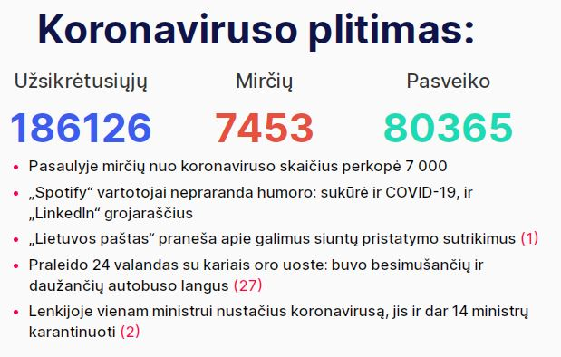
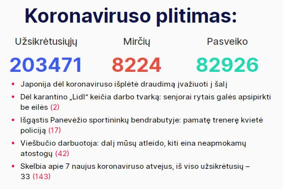
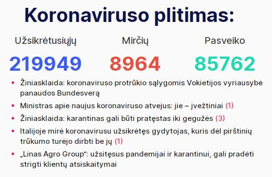
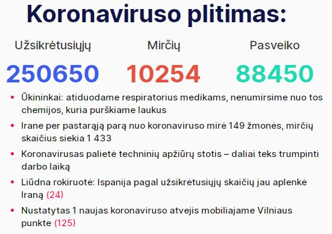
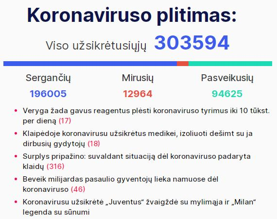
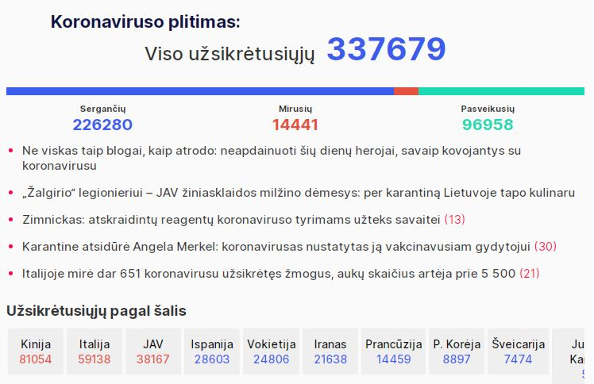
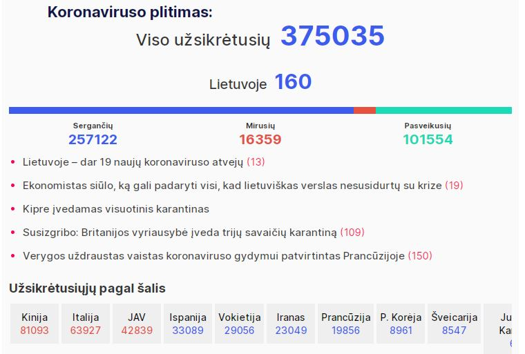
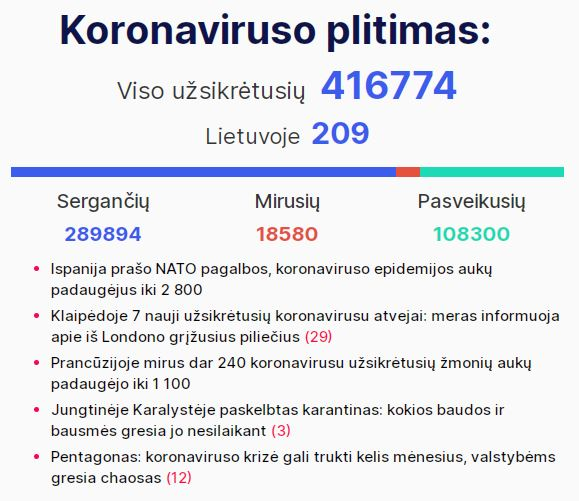

Imuosi įvykių fiksavimo dėl poros priežasčių. Pirmoji - laikas atnaujinti web puslapių kūrimo kuklias
žinias. Antroji - karantino trukmė realiai neapibrėžta. Kritiniu atveju gali būti ne 14 ir ne 30 dienų.
Ir smalsu užfiksuoti eigą bei pokyčius. Dievas duos, neteks rašyti - "226 diena. Maisto atsargų seniai
nebeliko. Prieš 3 dienas suvalgėme paskutinį katiną. Vakar teko šūviais ginti tolyn nuo namų
nepažįstamus asmenis, turinčius aiškiai negerų ketinimų. Bijau, kad naktį gali jie sugrįžti.. :"😜
Pokštas nelabai vykęs. Bet. Dar prieš 10 dienų niekas neprognozavo šios savaitės įvykių - faktiškai
uždarytos Europos, su masiškais apribojimais. Taip kad važiuojam.
1 Diena
Kovo 16. Pirmadienis
Pirma diena. Visi - aš, žmona, dukra, 3 katės ir šuo - namuose. Pasivaikščioti neiname. Žmona nuvažiuoja
parduotuvėn. Žmonių kaip įprastai. Prekių lentynose netrūksta. Namų šaldytuvas užpildomas pilnai. Pilnas
racionas - be pokyčių ar suvaržymų.
Diena praeina įveikinėjant misiją po misijos "Command & Conquer 3. Tiberium Wars. Kane Edition".
Apstu šmaikščių žinučių nuo draugų apie virusą ir apsaugas nuo jo.
Žiniasklaidoje atmosfera saikingai kaista. Sienas uždaro Kanada. Vakarop apie tokį pat ketinimą nuo kovo
18d. - Rusija. Pradeda aiškėti, kad Lietuva turi labai ribotą kiekį rinkinių, būtinų testuoti galimai
užsikrėtusius koronavirusu. Nenormali padėtis Lietuvos-Lenkijos pasienyje. Sunkvežimių eilė vakare
viršija
30km: Lenkija prieš įsileisdama nuodugniai tikrina vairuotojus. Kita karšta zona Vokietijos-Lenkijos
pasienyje. Susikaupė šimtai automobilių, norinčių grįžti tranzitu per Lenkiją Lietuvon. Lenkai
neįsileidžia.
Premjeras ir prezidentas bando derėtis. Žada su konvojumi leisti (tik) autobusus ir mikroautobus.
Išvakarėse
praimas gyrėsi suderėtu 36 val. humanitariu koridoriumi. Sakė netiesą.
Vakare - jau tradicinis kinoseansas. Šį kartą Guy Ritchie 'Aladin'. Geresnis, nei tikėjaus.
Dienos santrauka LaisvėsTV kanale:
Naujienos iš medikų fronto linijos laidoje "TIEK ŽINIŲ: kalba daktaras":
2 Diena
Kovo 17. Antradienis
Antra diena. Nujausdamas, kad karantinas šalies mastu gali užtrukti, ir norėdamas fiksuoti atskiras
gyvenimo
detales, pradedu šį tinklaraštį. Paskutinį mėnesį gilinaus tik į JAVA programavimo kalbą. Laikas
prisiminti,
kaip naudojami html, css.
Žmona darbe - t.y. prie savo darbo stalo namuose. Dukra liūdi prie savo kompo. Norėjo susitikti su
draugu. Atkalbėjome.
Žiniasklaidoje žinia apie pirmąjį sunkų atvejį Lietuvoje. Panevėžyje reanimacijoje - iš PAR grįžęs
verslininkas. Medžiojo?
Pradeda darbą papildomas koronaviruso patikros punktas Klaipėdoje.

Diena praeina programuojant šį puslapį, bei kovojant su virtualiais blogiečiais "Sniper Ghost Warrior
Contracts".
Dienos santrauka LaisvėsTV kanale:
Naujienos iš medikų fronto linijos laidoje "TIEK ŽINIŲ: kalba daktaras":
3 Diena
Kovo 18. Trečiadienis
Trečia diena. Anksti ryte - apie 4:30 - katė prašos laukan. Tenka lipti iš lovos. Keliuosi apie 10 val.
Pusryčiams - grūdėta varškė su džemu, kiaušininė su lašinukais, kava su BelVita sausainiu.
Po pusryčių einu pasivaikščioti. Pora kilometrų iki sutvarkyto miesto tvenkinio, pora kilometrų atgal.
Oras neblogas. Plius 14. Gal vėjas kiek slopina pavasarišką šilumą.
Pakeliui prasilenkiu su tuzinu tokių pat vaikštinėtojų. Vaikšto kas po vieną, kas dviese. Pojūčio, kad
miestelis tuščias nėra - šiame Prienų krašte ir eiliniu metu judėjimas minimalus. Didžiuma juda
automobiliais. Šių taip pat nėra daug.
Grįžtu. Internetu susimoku visas einamas sąskaitas - mobilus ryšys, paslaugos teikiamos namuose bei
Kauno ir Alytaus butuose. Dirbu prie tinklapio. Nusprendžiu, kad tinkama būtų pridėti kasdieninę Laisvės
TV dienos apžvalgą iš youtube kanalo, bei specializuotą to pat kanalo laidą "TIEK ŽINIŲ: kalba daktaras"
Šmaikščios žinutės nuo draugų apie gyvenimą karantino metu nesiliauja.
Žiniasklaidoje bene visas (bent jau pradinis) turinys - apie pandemiją. Lietuvoje - jau 33 atvejai.
Fiksuojamas pirmasis atvejis, kuomet pacientas užsikrėtęs vietoje.
Dalis lietuvių iš Vokietijos keltu, traukiniu, kariniu lėktuvu, organizuotu konvojumi sugrįžo namo.
Vilkikų vairuotojams papildomai atidaromas sienos kirtimo postas ties Lazdijais. Geriau nei nieko, bet
eilė pasienyje vis dar milžiniška.
Pasaulyje per parą virusas pareikalavavo per 700 gyvybių. Vis dar liūdnai pirmauja Italija. 475 mirtys
per 1 dieną.

Skambina pusseserė iš Čikagos. Situacija panaši į Lietuvos. Kas gali, sėdi, dirba namuose. Barai,
restoranai uždaryti. Mokymo procesas organizuotas nuotoliniu būdu. Įprastų kamščių keliuose nebėra.
Jungtinėse Valstijose jau 125 mirtini atvejai.
Vakarop vietoje paskiro filmo seanso imuosi serialo "I Am Not Okay with This". Serijos trumpos, po 20
minučių, tad visas 1 sezonas įveikiamas per vakarą.
Dienos santrauka LaisvėsTV kanale:
Naujienos iš medikų fronto linijos laidoje "TIEK ŽINIŲ: kalba daktaras":
4 Diena
Kovo 19. Ketvirtadienis
Ketvirta diena. Katinai nesudrumsčia nakties miego. Pabundu prieš devynias, bet dar valandą vartaus su
telefonu
rankose - facebook, instagram, naujienos žinių portaluose. Viskas kaip įprasta. Pusryčiams - grūdėta
varškė su džemu, avižinių dribsnių košė su bananais ir džiovintais abrikosais, kava, imbieriniai
sausainiai.
Po pusryčių - vėl pasivaikščiojimas. Šiandin pora laipsnių vėsiau nei vakar, bet be vėjo. Didinu
vakarykštį atstumą puskilometriu. Vaikštinėtojų gal keletu
mažiau nei vakar. Ties tvenkiniu aikštelėje ir parke suskaičiavau tik 4. Visi skyriumi. Sveikatos
ministras svarsto, kad piliečių teisė kvėpuoti grynu oru parkuose ir pasivaikščiojimo takais turi būti
ribojama. Gal tai paskutinis pasivaikščiojimas.
Humoru, kartais ne visai padoriu su bičiuliais dalintis nesustojame. Visos temos apie karantiną ir
pandemiją.
Žiniasklaidoje pozityvo vis dar nedaug. Valdžios vyrai džiaugias, kad Lietuva labai gerai tvarkosi su
situacija. Oponentai kritikuoja, kad nežymus Europos mastais užfiksuotų viruso paplitimo atvejų kiekis
yra dėl elementarios priežasties - nustatymo testų atliekama nusikalstamai mažai. Tikrosios padėties
nežino niekas.
Iš geresnių žinių - vilkikų eilės prie Lenkijos sienos išnyko. Papildomo posto ties Lazdijais atidarymas
padėjo.
Pasaulyje vėl apie 800 gyventojų dėl koronaviruso sukeltų komplikacijų iškeliavo anapilin. Užkrato
plitimo tempai nemažėja. Italijoje dar 427 naujos mirtys. Bendru mirčių kiekiu (3405) šalis aplenkė
Kiniją (3245).

Rinkose pinga nafta, o Rusijoje toliau sminga rublis. Steam platformoje sulaukiu nuolaidos ir skubu
įsigyti "Red Dead Redemption 2". Kultinis žaidimas laukinių vakarų tematika. Karantinas dėka tokių
pramogų neprailgs.
Vakaro seanse - (žiūrovų pageidavimu - žmona primygo) indų filmas "Taare Zameen Par", kas išvertus
reikštų "Žemės žvaigždutės". Po peržiūros galiu įvertinti - geras, rekomenduoju.
Dienos santrauka LaisvėsTV kanale:
Naujienos iš medikų fronto linijos laidoje "TIEK ŽINIŲ: kalba daktaras":
5 Diena
Kovo 20. Penktadienis
Penkta diena. Viskas kaip paprastai. Pabundu prieš 9, pusryčiauju apie 10. Racionas įprastas.
Po pusryčių laukiu kol atsikels dukra - planuojame pasivaikščioti visi kartu.
Vaikštinėti renkamės ne Prienus, bet Druskų mišką, kuris plyti kitoje nei Birštonas Nemuno pusėje.
Formaliai, čia taip pat Birštonas. Net miško takai vadinami gatvėmis ir turi pavadinimus.
Kol nepaskelbė griežto ribojimo eiti iš namų, skubame pabūti gryname ore. Sutinkame keletą kitų
vaikštinėtojų. Oras neblogas. Vis dar vėsu, bet nėra šalta. Savaitgalį sinoptikai žada 0-5 Celsijaus
laipsnių ir galimą šlapdribą. Teks sėdėti "ant pečiaus".
Lietuvoje jau 49 patvirtinti viruso nešiotojai. Žiniasklaidoje valdžios prisipažinimas - testavimui
reikalingos priemonės baigėsi. Sveikatos reikalų ministeris kalba apie pauzę (!?). Prieš porą dienų
gyrės kaip gerai Lietuva tvarkos, kaip mažai pas mus užsikrėtusių. Kol neatveš naujų priemonių
užsikrėtusių skaičius iš vis neaugs. Galėsime toliau pasidžiaugti pirmavimu. Profesionalai, bl...
Iš geresnių žinių - gauta siunta iš Kinijos. Apsauginės kaukės ir vienkartinės pirštinės. Šis tas yra
geriau nei nieko. Medikai iš visų gydymo įstaigų paskutiniu metu vienas per kitą skundėsi visa ko stoka.
Dar 1300 mirčių pasaulyje per parą. Daug. Kinija pamažu grįžta prie normalaus būvio, o Europa ir Amerika
karštligiškai ieško būdų suvaldyti situaciją. Rusija panaši į Lietuvą (arba atvirkščiai) - tiria nedaug,
randa nedaug. Skirtingai nei pas mus, kur katalikų bažnyčia perėjo prie nuotolinių pamaldų (per TV)
modelio, bei vestuvių ir krikštynų atšaukimo, ten kovodami su virusu stačiatikių popai rengia kryžiaus
nešimo žygius. Be abejo dalyvaujant tūkstančiams tikinčiųjų. Panašius reportažus mačiau ir iš Ukrainos.
Pravovierai, odnako.

Vakaro seanse - naujas serialas "Dark".
Naujienos iš medikų fronto linijos laidoje "TIEK ŽINIŲ: kalba daktaras":
6 Diena
Kovo 21. Šeštadienis
Šešta diena. Nedarbo diena. Nors man tokia pat kaip ir visos kitos.
Pirmoji užfiksuota mirtis nuo koronaviruso Lietuvoje. Daug neaiškių detalių ir nemalonių prielaidų -
kalbama, kad užsikrėtė.. ligoninėje.
Nei praimas, nei sveikatos ministeris viešumoje nepasirodo. Aukštas ir gražus iš Daukanto aikštės vėl
veblena apie būtinybę vienytis. Apie būtinybę keisti krizės valdytojus nekalba.
Viso atėjus vakarui Lietuvoje fiksuojami 99 infekcijos atvejai. Būtų ir daugiau - testavimui reikalingų
priemonių nebeliko. Kitą savaitę žada gauti. Manau, skaičius bus su papildomu nuliu. Ir bus dar gerai
jei tik toks.
Italai toliau miršta. 793 fatališki atvejai per parą. Ispanijoje - 285 mirtys. 112 - Prancūzijoje, 56 -
Jungtinėje Karalystėje, po 30 Belgijoje ir Nyderlanduose, 23 - Šveicarijoje. Jungtinėse Valstijose - 32.
Ir t.t., ir pan.
Dieną praleidžiu prie kompiuterio. Oras buvo neblogas. Saulėta. Bet.. patingėjau.
Daug žinučių su juokeliais. Tai reiškia, kad kokie liūdni bebūtų skaičiai, žmonės nepraranda humoro
jausmo. Kita vertus, tos mirtys vis dar kur tai toli.

7 Diena
Kovo 22. Sekmadienis
Septinta diena.
Trumpai. Diena namuose. Pasivaikčioti neiname. Giedra ir vėsu. Temperatūra apie nulį. Norisi šilumos.
Statistika. Italijoje - 651 mirtys per praėjusią parą. Pasaulio mastu (diena dar nesibaigė) - per 1500.
Lietuvoje naujų mirčių nėra, o viruso nešiotojų užfiksuota 129. Praimas praneša apie laukiamus 5000
testavimo rinkinių "jau rytoj" ir žada pradėt gausų testavimą (~1000 / dieną) nedelsiant. Matysim.

8 Diena
Kovo 23. Pirmadienis
Aštunta diena.
Trumpai. Diena namuose. Pasivaikčioti neiname. Giedra ir vėsu. Temperatūra apie nulį. Norisi šilumos.
Statistika. Italijoje - 601 mirtys per praėjusią parą. Pasaulio mastu (diena dar nesibaigė) - per 1700.
Lietuvoje naujų mirčių nėra, o viruso nešiotojų užfiksuota 160. Jungtinėse valstijose - 9400 naujų
atvejų ir 111 mirčių.

Dienos santrauka LaisvėsTV kanale:
Naujienos iš medikų fronto linijos laidoje "TIEK ŽINIŲ: kalba daktaras":
9 Diena
Kovo 24. Antradienis
Devinta diena.
Šaldytuvas kiek pratuštėjo, bet poreikio keliauti parduotuvėn dar nėra. Pasivaikščioti
neiname. Lauke vis dar giedra ir vis dar šalta. Dieną teįšilo iki poros laipsnių. Laikas pavasariui.
Saulėlė jau nugalėjusi tamsą - diena ilgesnė už naktį.
Lietuvos valdžia bejėgiškai skeryčiojas su savais sprendimais. Efekto mažai, triukšmo daug. Panašu, kad
tuoj uždraus išeiti iš namų. Žadėtas gausus testavimas vis dar nepradėtas. Iš užsienio pargrįžtančius
nuo šiandien ėmė karantinuoti priverstinai. Tam nepritaikytuose hostel tipo viešbučiuose - po 5-6 žmones
kambaryje. Apsaugos priemonės nenumatytos. Kiek efektyvūs panašūs veiksmai, paaiškėjo jau gabenant
žmones iš aerouosto - sukišo it silkes visus į ankštą autobusą. Jei kas buvo sveikas, tai esant viruso
nešiotojui, turės puikią galimybę susirgti.
Registruotų atvejų Lietuvoje - 209. Užfiksuota antroji mirtis - 90-ies senolė pralaimėjo kovą.
Pasaulio statistika. Italai nenusileidžia liūdnoje statistikoje - 743 aukos per parą. Planetoje - per
2100. Antrąją vietą užima Ispanija - neteko 497 piliečių. Jungtinėse valstijos lyderiauja testuodami (ir
atrasdami naujai užsikrėtusius) - 9249 nauji atvejai ir 132 naujos mirtys. 240 fatališkų atvejų per
dieną Prancūzijoje.

Dienos santrauka LaisvėsTV kanale:
Naujienos iš medikų fronto linijos laidoje "TIEK ŽINIŲ: kalba daktaras":